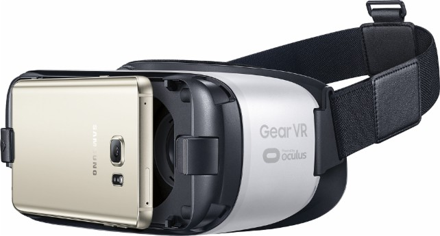
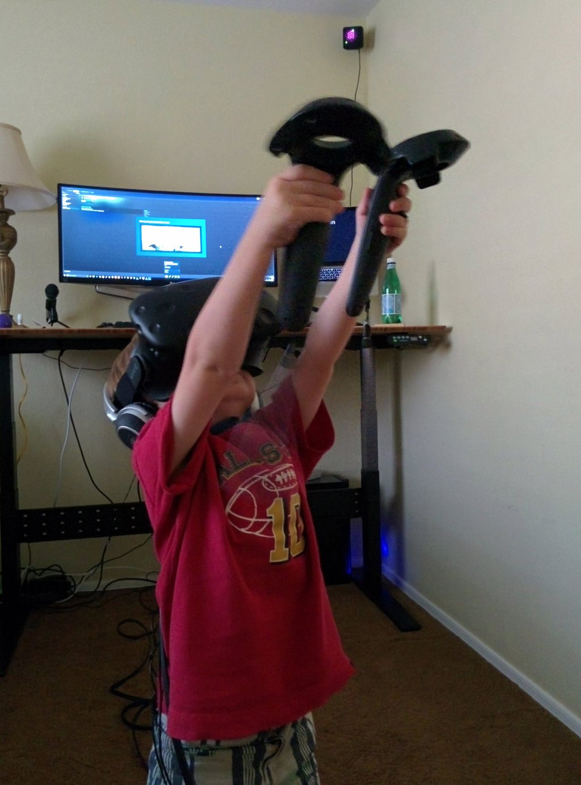

WebVR and A-Frame

* available in a number of formats and price points
* major console manufactures are planning for VR


Inexpensive VR Experiences
Mid-range VR Experiences

High-End VR Experiences
VR experiences are available at all levels.
WebVR aims to bring VR content through the ubiquitous browser platform.
Generation-VR?
The State of VR
- Applications
- Behind Storefronts
- Installation required
WebVR Opens VR to the Web
- Open VR experiences
- Enhance information with VR
- Instant access to content
- Device agnostic platform
WebVR
What is WebVR?
A W3C specification providing device-agnostic access to headsets and sensors in the browser.WebVR Features
- List attached devices
- Configuring VR displays (HMD)
- Rendering support for WebGL & three.js
- No Controller Support
- Not a Rendering Engine
A-Frame
A declarative framework for building virtual reality experiences on the web